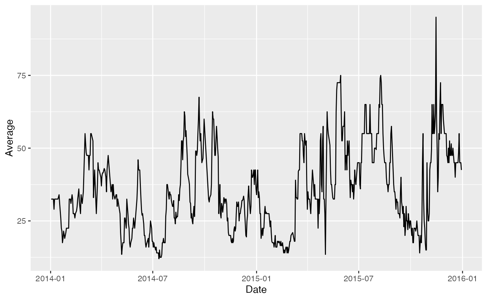
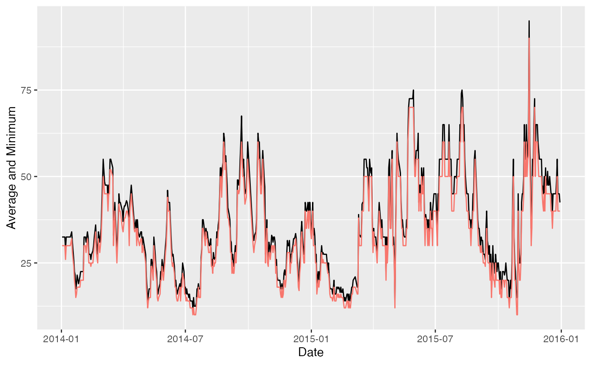
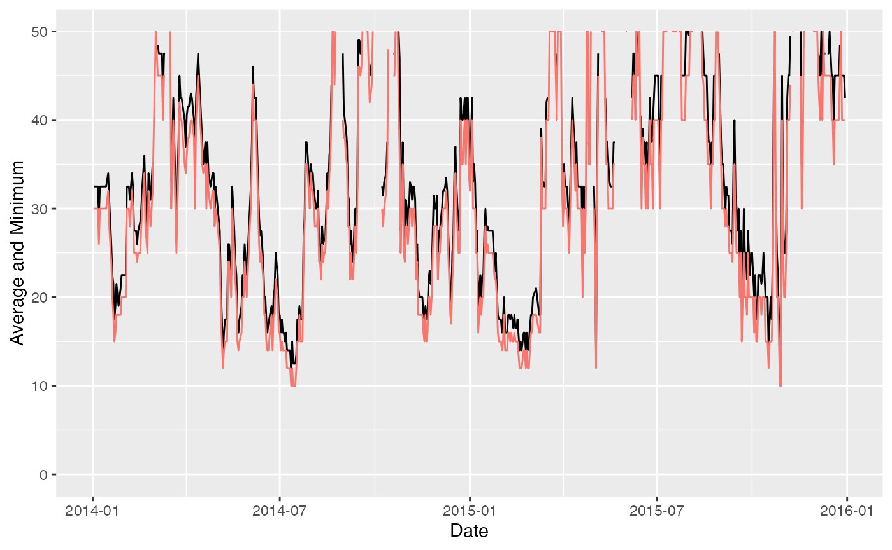

Tomamto Vignette
Suah Kim
2023-05-04
tomato_vignette.RmdIntroducing ggplot2
ggplot2 is a R package that enables us to create elegant
data visualizations using the grammar of graphics. With this function,
we provide the data we are going to be using and apply what kind of
aesthetics and mappings we want to see.
A layer combines data, aesthetic mapping, a geom (geometric object), a stat (statistical transformation), and a position adjustment. Typically, you will create layers using a geom_ function, overriding the default position and stat if needed. I’ll be utilizing various layers throughout this vignette to demonstrate different visualizations.
Example with a Data Set
This data set explores daily prices of tomatoes between 2014 and 2015, including minimum, maximum, and average prices.
tomato <- read_csv("Tomato.csv")
tomato <- tomato |>
filter(Date > "2014-01-01" & Date < "2015-12-31") |>
select(-Unit, -Market)
glimpse(tomato)
#> Rows: 661
#> Columns: 4
#> $ Date <date> 2014-01-02, 2014-01-03, 2014-01-05, 2014-01-06, 2014-01-07, 2…
#> $ Minimum <dbl> 30, 30, 30, 30, 26, 30, 30, 30, 30, 30, 30, 32, 28, 24, 20, 18…
#> $ Maximum <dbl> 35, 35, 35, 35, 32, 35, 35, 35, 35, 35, 35, 36, 34, 28, 25, 25…
#> $ Average <dbl> 32.5, 32.5, 32.5, 32.5, 29.0, 32.5, 32.5, 32.5, 32.5, 32.5, 32…Line Plot with ggplot2
A line plot is useful to show the changes within a certain time frame. This line plot illustrates the average tomato prices throughout the time, along with the minimum prices.
The first plot only shows the average along with the the date between 2014 and 2015.

We can add more codes to our original data set so we can add minimum prices with color red.
ggplot(tomato, aes(x=Date)) +
geom_line(aes(y=Average)) +
geom_line(aes(y=Minimum, color="red")) +
labs(y = "Average and Minimum")+
theme(legend.position = "none")
If we want to see the Average and Minimum prices between a certain range, we can set scale limits.
ggplot(tomato, aes(x=Date)) +
geom_line(aes(y=Average)) +
geom_line(aes(y=Minimum, color="red")) +
labs(y = "Average and Minimum")+
theme(legend.position = "none")+
ylim(c(0, 50)) 